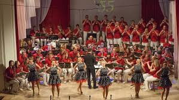
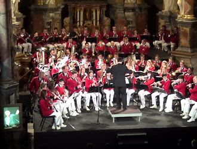

Orkestro istorija

1960 m. muzikos mokytojo S. Sinkevičiaus iniciatyva vidurinėje mokykloje susibūrė pučiamųjų instrumentų orkestras. Iš Kybartų išvykus orkestro vadovui, šį darbą perėmė jo mokinys, Antanas Ziegoraitis, o nuo 2011 m. kolektyvui vadovauja Donatas Ziegoraitis. Orkestre groja virš 70 muzikantų. Orkestro koncertines programas pagyvina ir praturtina šokėjų grupė, kurioje yra virš 20 šokėjų.
Pasiekimai

Naujoji Kybartų orkestro sudėtis, vadovaujama Donato Ziegoraičio, įkvėpta senųjų tradicijų bet kartu ir nepabijodama gaivių naujovių, jau spėjo nusiskinti keletą laurų įvairiuose šalies konkursuose.
2011 m. orkestras laimėjes Grand Prix A kategorijoje (2011m) kartu su geriausio kategorijos orkestro apdovanojimu. 2012 m. XII Lietuvos PIO čempionate Kybartų orkestro moksleiviai B kategorijoje laimėjo Grand Prix ir 2013 m. XIII Lietuvos PIO čempionate Kybartų orkestro moksleiviai C kategorijoje taip pat laimėjo Grand Prix.
Kybartų pučiamųjų instrumentų orkestras gerbėjus vėl nudžiugino ne tik puikiu koncertu Vilkaviškio kultūros centre, bet ir išskirtine jo surengimo proga. Kolektyvas tapo pirmuoju šalyje, pelniusiu trečią „Aukso paukštės“ apdovanojimą ir geriausio mėgėjų orkestro Lietuvoje pripažinimą.Kybartų pučiamųjų instrumentų orkestras gerbėjus vėl nudžiugino ne tik puikiu koncertu Vilkaviškio kultūros centre, bet ir išskirtine jo surengimo proga. Kolektyvas tapo pirmuoju šalyje, pelniusiu trečią „Aukso paukštės“ apdovanojimą ir geriausio mėgėjų orkestro Lietuvoje pripažinimą.
Renginiai

Šių metų sausio 9 dieną Vilniuje koncertavo Kybartų pučiamųjų instrumentų orkestras „Kybartai“, jau 55 metus savo miestą garsinantis visoje šalyje, o Lietuvos vardą – pasaulyje. Koncertas buvo skirtas praėjusių metų spalio 24 d. anapilin išėjusio ilgamečio orkestro meno vadovo ir dirigento Antano Ziegoraičio šviesiam atminimui. Šis iškilus pučiamųjų kultūros puoselėtojas gyvas daugelio muzikos mėgėjų ir profesionalų atmintyje – tai liudijo į koncertą susirinkusi gausi publika. Orkestrui dirigavo maestro sūnus Donatas Ziegoraitis.